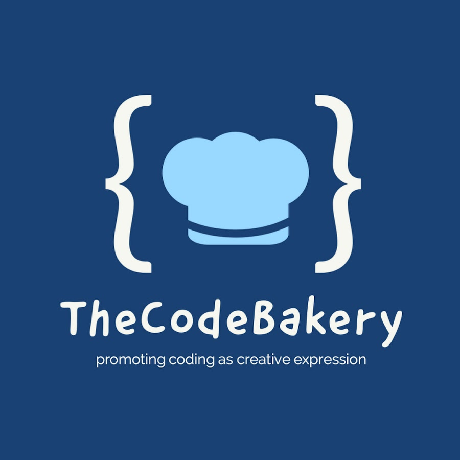

More About Me

A sport stuck in the heart
I am not going to lie even if I am a huge basket-ball fan, football (soccer) is and has always been my favorite sport. I played it ever since I was 4 years old and I got pretty good to the point where I played regional and even got selected to play nationally once. I took the sport really seriously and it taught me a lot. Throughout the years of playing the sport, I learn to respect, to work hard and to never underestimate your opponent or the obstacles you face in life. For me it is more that a sport as I got to grow up doing it. The picture above shows me and my team back in the summer of 2018.

A valuable initiative
In late August 2021, I got an offer to volunteer for a small non-profit that makes free coding tutorial on YouTube and who also give private coding lessons online. I accepted the offer and became a member of the Code Bakery community. I love volunteering there because I get to work on various projects such as web development, video editing and even teaching. The experience I get from doing that is amazing because I get to see that people really use the free resources that the Code Bakery makes to learn coding. If you want to learn more about the code bakery, click on their website below.
A Chess Addction ♟
It has been more than 8 months since I started playing the game of chess and I just love it. I find the game to be at the same time strategic, logical, intuitive and I just love it. I usually play online on chess.com Below there is my profile, in case you're interested in a quick game. 🤘🏾